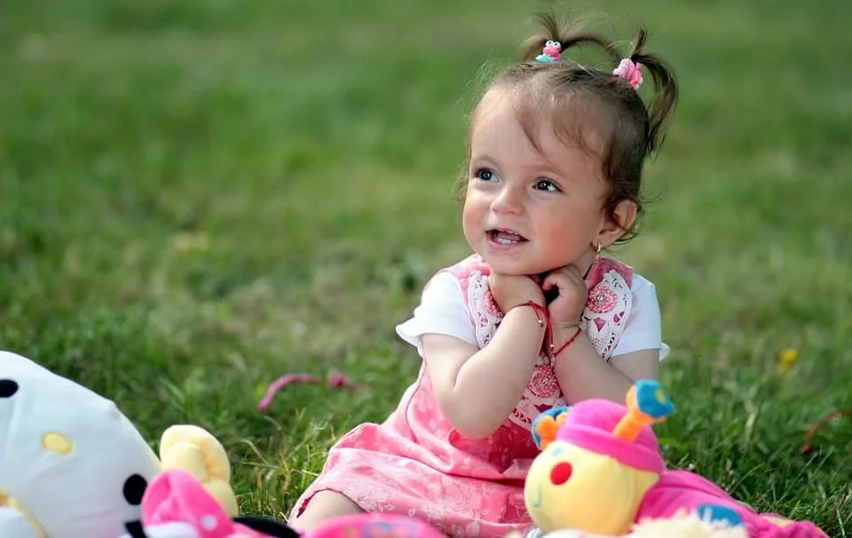
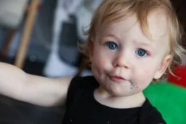
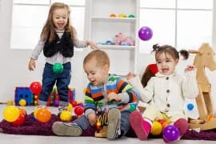
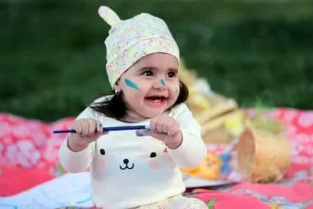
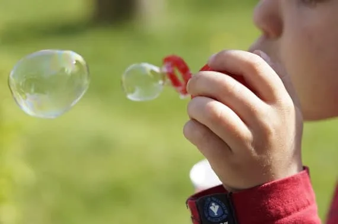

Zadbaliśmy o profesjonalną koncepcję pracy
Założenia programu oparte są na dyskursie konstruktywistyczno-społecznym. Wiele inspiracji czerpaliśmy z Programu Zabaw FundaMentalnych oraz Teorii Inteligencji Wielorakich Howarda Gardnera.
Olsztyn · Kortowo
Znajdziesz nas w Kortowie
Zapewniamy Maluchom jak najlepszą opiekę, spokojną i przyjazną atmosferę, w której odkrywamy Małego – Wielkiego Człowieka.

Mały – Wielki CzłowiekPoznaj Uniwerek
Z radością pragniemy zaprosić Państwa do Placówki opieki nad dziećmi w wieku do lat 3 „Uniwerek” dla dzieci od 1. roku życia (jeżeli rozwój psychomotoryczny dziecka na to pozwala) do ukończenia roku szkolnego, w którym dziecko ukończy 3. rok życia lub w przypadku, gdy niemożliwe lub utrudnione jest objęcie dziecka wychowaniem przedszkolnym – 4. roku życia.
Placówka powstała dzięki porozumieniu dwóch podmiotów: Stowarzyszenia Oświata – Wychowanie – Aktywizacja „SOWA” i Uniwersytetu Warmińsko-Mazurskiego w Olsztynie. Naszym wspólnym celem stało się stworzenie przyjaznego, kameralnego miejsca o wysokim standardzie, spełniającego potrzeby i oczekiwania Maluchów oraz Was Rodziców.
Pragniemy wspierać studentów, doktorantów oraz pracowników akademickich w profesjonalnej opiece i mądrym wychowaniu ich Pociech.
Wiemy, jak trudno łączyć naukę i pracę z rodzicielstwem, dlatego to szczególnie do Was kierujemy naszą ofertę.
Kim jesteśmy
Miejsce tworzą ludzie i to od nich zależy bezpieczeństwo i uśmiech dzieci.
Pracą placówki kierują dwie ambitne mamy, które same doświadczają wyzwania, jakim jest łączenie rodzicielstwa z pracą naukową: dr nauk społecznych Anna Godlewska-Zaorska oraz dr nauk społecznych Bernadetta Olender-Jermacz.
Jako osoby od lat związane z Uniwersytetem Warmińsko-Mazurskim w Olsztynie korzystając z zasobów Uczelni stworzyłyśmy na jej terenie miejsce opieki dla najmłodszych – „Uniwerek”.
Kadrę placówki stanowi zespół wysoce wykwalifikowanych, kreatywnych i cierpliwych opiekunek. Ciepła atmosfera, indywidualne podejście do dziecka sprawiają, że Maluchy czują się u nas dobrze.
„Uniwerek” tworzą ludzie z pasją, o wielkich sercach, dla których praca z najmłodszymi to powołanie.
Jak pracujemy
Wspieramy proces odkrywania oraz stopniowego przejmowania inicjatywy przez dziecko. Pobudzamy samodzielność!
Poznaj nasz sposób pracyNasze podejście
Założenia programu oparte są na dyskursie konstruktywistyczno-społecznym. Wiele inspiracji czerpaliśmy z Programu Zabaw FundaMentalnych oraz Teorii Inteligencji Wielorakich Howarda Gardnera.

Tworzymy kameralne środowisko dostosowane do potrzeb dzieci. Dbamy o bezpieczeństwo, funkcjonalność i higienę otoczenia dzieci.

Uważamy, że kontakty z Rodzicami powinny być oparte na wzajemnym zaufaniu i zrozumieniu. Zapewniamy informacje na temat koncepcji pracy placówki, postępów dziecka i ewentualnych trudności.

Wprowadziliśmy stymulujące otoczenie: materiały i pomoce dydaktyczne zachęcające dzieci do podejmowania wielokierunkowej aktywności.
Odkrywanie przez zabawę

zajęcia plastyczno-techniczne

zajęcia muzyczno-ruchowe

zajęcia logopedyczne

zajęcia literackie, małe formy teatralne
Jak pracujemy
Zdajemy sobie sprawę, że dziecko jest cudem, jedynym, wyjątkowym i niezastąpionym. Wskazując na jego otwartość, ciekawość świata, radość eksperymentowania i potrzebę komunikowania się z otoczeniem uwzględniliśmy zajęcia, które obejmują rozwój fizyczny, intelektualny, emocjonalny i społeczny oraz wiele innych obszarów.
Zajęcia prowadzone są w sposób naturalny, zgodnie z możliwościami i potrzebami dzieci. Program zawiera bazę zabaw i gier, które dostarczają dziecku radość, ale mają również swój cel – uczą. Proponowane metody i techniki pracy zapewniają aktywny udział dzieci w nauce. Wykorzystują zabawę, ruch i dużą wrażliwość dziecka na bodźce. Przecież Maluch poznaje najbliższe otoczenie wszystkimi zmysłami! Zakładamy użycie rysunków, kart z obrazkami, plansz, plakatów. Pragniemy nauczyć dzieci słuchania i obserwacji poprzez czytanie ciekawych książek, słuchanie muzyki, słuchowisk i doświadczanie przygód. Stawiamy na swobodną, nieskrępowaną, twórczą, typową dla wieku dziecięcego zabawę.
Uważamy, że stałe czynności w rozkładzie dnia dają zarówno dziecku jak i opiekunowi poczucie bezpieczeństwa, pod warunkiem, że wypływają z naturalnego rytmu dnia, a nie sztucznych regulacji. Dlatego też dostosowujemy się do potrzeb Malucha. Uwzględniamy również potrzebę ruchu na świeżym powietrzu i kiedy to możliwe korzystamy ze sprzyjających warunków atmosferycznych. Rytm życia w placówce uwzględnia konieczność przeplatania zajęć: zajęcia o mniejszej i większej intensywności ruchu, swobodne i zaplanowane, w pomieszczeniach i na powietrzu.
Nasz wspólny dzień
Kontakt
ul. Michała Oczapowskiego 9
10-719 Olsztyn
Godziny pracy7.00-16.00
Zapraszamy na FacebookPo kliknięciu mapa połączy się z Google, które może przetwarzać dane dotyczące Twojej wizyty.